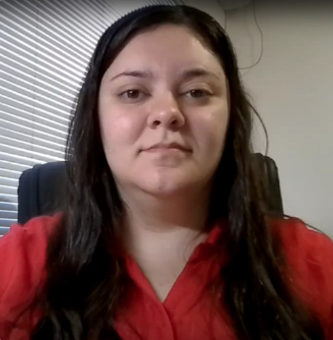

Alunos

Ex-aluna Bruna Simões da Cunha Bragato, 29 anos.
Essa instituição tem um papel fundamental em minha vida, realizei o curso de ferramentas de cortes, dobra e repuxo, que se iniciou no primeiro semestre de 2008, com duração de dois anos, logo me formei em dezembro de 2009, com 16 anos. No final do curso fui selecionada para trabalhar com menor aprendiz, com influência no curso realizado. Atualmente trabalho em duas empresas, sendo uma na área de usinagem e outra na fundição de ferro, mesmo depois de tantos anos, o curso ainda tem muita influência em minha vida.
Ex-aluno José Antônio da Luz Filho, 49 anos.
Trabalho na empresa SESI, sendo supervisor de manutenção. Fiz Eletricista
residencial/industrial e comandos elétricos no SENAI. Realizei estes cursos, porque além de ser uma área de
trabalho que sempre gostei eu trabalhava como auxiliar de eletricista na empresa Daruma Urmet. Atualmente
sou um gestor realizado e bem sucedido profissionalmente.
Mauro Filho Ex- Aluno2º semestre de 2014.
O curso de Tecnólogo em Eletrônica Industrial me proporcionou, como profissional, a
ampliação de conhecimento e recursos a serem utilizados no cotidiano profissional. Com o auxílio dos
docentes e a estrutura que o SENAI oferece, fica muito mais fácil atuar neste mercado de trabalho
competitivo.